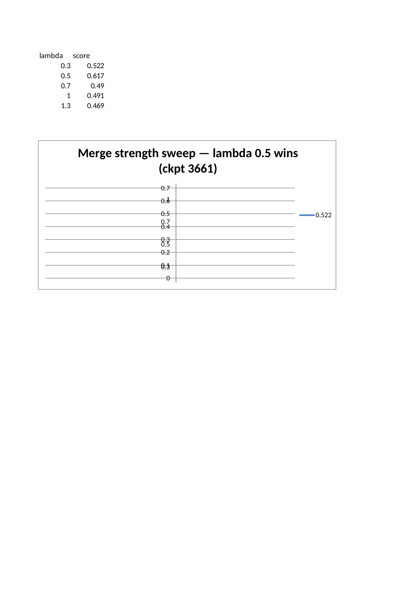
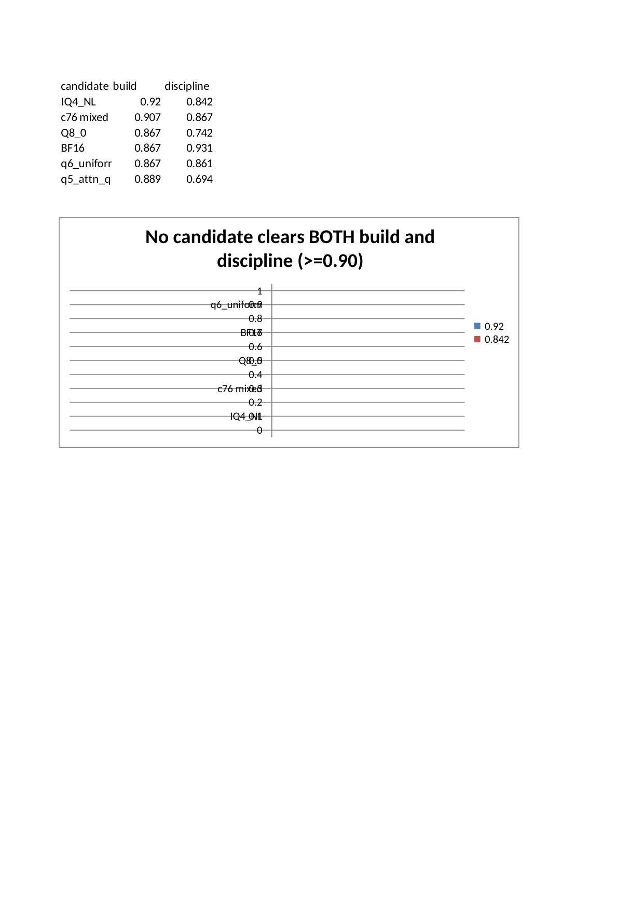
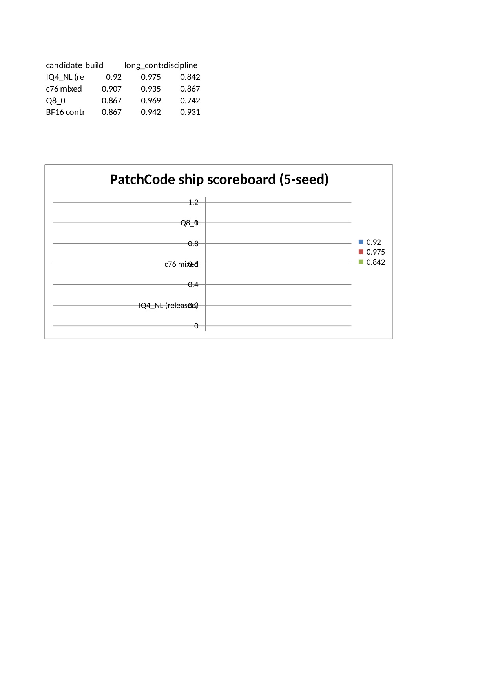

Qwen3.6 AEON RYS PatchCode (merged_lam0.5): What We Actually Did
This is the longer, more casual write-up for the PatchCode upload candidate (internal project name merged_lam0.5).
The clean model card stays short. This document is the full story: what we distilled, exactly how the dataset was built, how we tested it, why the early single-run scores fooled us, why we stopped trusting them, and why the upload candidate ended up being the plain IQ4_NL (reasoning-imatrix) merged GGUF rather than a heavier mixed-quant recipe.
Related public guides:
- runtime fork: https://github.com/noonr48/qwen36-aeon-ik-llama
- RYS layer-duplication / architecture guide: https://github.com/noonr48/qwen36-aeon-ik-llama/tree/main/docs/rys-layer-duplication-guide
- previous fine-tuned release (SignalLatch): https://huggingface.co/jackasda211233/Qwen3.6-27B-AEON-RYS-SignalLatch-GGUF
Related release line:
- previous finetune: Qwen3.6-27B-AEON-RYS-SignalLatch-ckpt386-s010-IQ4_NL.gguf
- this upload candidate: Qwen3.6-27B-AEON-RYS-Agentic-Coder-PatchCode.IQ4_NL.gguf
Glossary
AEON: the upstream/source model family this RYS line was built from (AEON-7/Qwen3.6-27B-AEON-Ultimate-Uncensored).SignalLatch/ckpt386-s010: the previous finetune in this line — a behaviour LoRA (checkpoint 386) merged into the AEON RYS base at strength0.10. PatchCode is built on top of this.PatchCode/merged_lam0.5: the public name for this release. It is a second behaviour distil (an agentic-coder joint LoRA) merged onto SignalLatch at strength0.5.IQ4_NL: the quantized GGUF deployment format we actually upload and run.imatrix: importance-matrix-assisted quantization data.reasoning-imatrix= calibrated on reasoning/coding text (the kind that worked);media-imatrix= an earlier calibration kind that underperformed.ik-llama: the custom runtime fork. Theqwen3_5hybrid architecture does not load on stockllama.cpp/vLLM.KritaLite: our hardened real-world discriminator build (a ~160k-token multi-file app, 15 binary verifier components). Single-shot coding gates saturate on this model family, so we stopped trusting them.discipline/style_discipline: a rubric measuring the distilled action-first style (no preamble, claim-requires-run, narrate→act→verify).
The short version
We started from the SignalLatch finetune and distilled a second, agentic-coder behaviour LoRA on top of it. The goal was not a new general chat model. The goal was to make the model a better coding agent: action-first execution, claims backed by an actual run, systematic diagnose→fix loops, stable multi-turn tool use, and fewer stalled runs.
After a full 5-phase bake-off, the model that held up was:
Qwen3.6-27B-AEON-RYS-Agentic-Coder-PatchCode.IQ4_NL.gguf
That means:
- base: Qwen3.6-27B-AEON-RYS-SignalLatch-ckpt386-s010
- adapter: agentic-coder joint LoRA, checkpoint 3661
- merge strength: 0.5 (effective alpha/r = 1.0)
- deploy format: plain IQ4_NL with reasoning-imatrix
- runtime: custom AEON ik-llama fork
The awkward part — and the reason this write-up is long — is that the eventual ship pick was not the candidate that looked best early. A mixed-quant recipe (c76) hit a perfect-looking build score on the first multi-seed pass and did not reproduce. A 5-seed, same-condition confirm reversed the read. The plain IQ4_NL ended up tied with everything else within noise, so the decision fell to non-noise axes (size, recipe safety), where plain IQ4_NL wins.
What this was meant to upgrade
PatchCode is an upgrade over the existing SignalLatch finetune:
Qwen3.6-27B-AEON-RYS-SignalLatch-ckpt386-s010-IQ4_NL.gguf
The new work was not another RYS architecture pass (the architecture is unchanged and is documented in the layer-duplication guide). The new work was a behaviour distil layered on top of SignalLatch, then merged and quantized into the same practical Q4-class deployment lane.
Public framing stays narrow:
This is a practical coding-agent / tool-use-oriented fine-tuned IQ4_NL variant of the SignalLatch release.
It should not be framed as:
- a universal upgrade over base in every format
- a general chat benchmark win
- a stock llama.cpp / vLLM model
- a live-LoRA deployment recipe
The dataset — exact pipeline
This is the part most people ask about, so it is written out in full. The training blend is ~58.5k examples and is made of two pieces: a large synthetic coding-agent behaviour backbone and a smaller curated action-first style slice, blended together.
Piece 1 — synthetic coding-agent behaviour backbone (~43k)
A standalone generator (generate_v2.py) produces synthetic multi-turn coding-agent traces. It is fully synthetic — no real user data, no scraped repos. The pipeline:
- Behaviour-driven generation. A pool of parallel workers calls a coding-agent teacher model. Each call is shaped around a named behaviour from a fixed behaviour pool (~30 behaviours), for example:
-
survey_before_edit— read/search the real context before touching code -hypothesis_driven_debugging— form a hypothesis, then verify -tool_intent_first— express tool intent before prose -weigh_alternatives_then_commit— weigh ≥3 options, commit to one, verify -external_awareness— check versions/docs before asserting -recall_first_habit— recall prior context before re-deriving - Tool-agnostic vocabulary (anti-lock-in). Tool calls use a behavioural-category vocabulary (e.g.
memory_search,repo_search,render_or_visual_proof), not real tool names. This is deliberate: the model learns when/why to use a tool, not a specific vendor's API surface. - Scenarios. A synthetic scenario bank provides repo-shaped task context (file trees, failing tests, stack traces) so the traces are grounded in realistic edit/verify loops.
- Quality gates (per sample). Traces that fail the gates are dropped, not emitted:
-
no-op-editguard (a claimed edit that changes nothing) -claim-without-verifyreject (the assistant claims done with no run/check) -reasoning-empty/incomplete-trace/lang-runner-mismatch/prompt-over-cap - Deficit-resume scheduling. Generation runs continuously, tracks per-behaviour deficits, and resumes after interruption until target counts are met. (~30 samples/sec on the build host.)
Corpus assembly + filtering (exact counts):
- raw unified coding corpus: 71,776 samples
- filter drops 10,666 bad samples → 61,110 kept
- top drop reasons: prompt_over_cap 3,946 · lang_runner_mismatch 3,645 · reasoning_empty 2,086 · incomplete_trace 861 · claim_without_verify 620
- coding training subset used for the blend: 43,075 (meda_lora_train_v2x1)
The broader synthetic corpus spans five behaviour layers (media-behaviour 42,973 · tool-depth 15,242 · reliability 19,393 · self-correction 31,476 · coding 7,721 = 116,805 total before filtering); the blend draws the coding-oriented subset.
Piece 2 — curated action-first style slice (~7k)
A smaller slice of curated execution-style traces that model the exact discipline we wanted to amplify: terse narrate→act→verify, no preamble, claim-requires-run. Composition (6,953 total):
- own multi-project execution sessions (5,455) — span many different projects on purpose, so the style generalises instead of locking to one domain
- a different-domain contributor (1,130) — explicitly included for cross-project transfer
- reasoning-chain exemplars (368) — weigh-alternatives deliberation seeds
De-identification / anti-lock-in pass: real tool names, hostnames, absolute paths, and identifiers are abstracted to behavioural-category tokens / placeholders. The supervision is assistant-turn-only — system/user/tool turns (where real project content lives) are masked (IGNORE_INDEX), so the model learns a behaviour policy conditioned on varied context, not project facts as outputs.
Piece 3 — the blend
A small blender oversamples the style slice so it is not drowned by the larger coding backbone, then shuffles:
- coding backbone:
43,075 - style slice oversampled ~2.2×
- blended training file:
58,576(training_blend) ≈ ~74% coding backbone / ~26% action-first style
The oversample ratio was chosen so the style shows up without overfitting the smaller slice; a held-out task type was used to check it generalises rather than parrots.
What the dataset is not
- It is not scraped real-user data or real private repos.
- It is not a single-topic dataset — both pieces deliberately span many projects/domains.
- It does not teach new domain facts; it teaches an execution discipline.
The training piece
A single LoRA was joint-co-trained on the blended 58.5k set (one adapter, not two-then-merge — a prior two-adapter λ-merge plan was superseded because post-hoc merges can kill a fragile capability with no usable λ).
Training config:
- PEFT type: LORA
- rank: r=32, alpha: 64 (alpha/r = 2.0)
- dropout: 0.05
- target modules: all-linear, including the hybrid arch projections — q/k/v/o_proj, gate/up/down_proj, out_proj, and the linear-attn/SSM projections in_proj_qkv / in_proj_a / in_proj_b / in_proj_z
- supervision: completion-only (assistant turns only)
- optimiser: adamw, lr 5e-5 + warmup + cosine decay
- epochs: 1
- backend: model-parallel device_map across a multi-GPU host (the max-quality path; the no-NVLink fleet ruled out DeepSpeed/FSDP here)
Completion:
- global_step=3661 = epoch 1.0 complete
- final train_loss ≈ 0.853
- runtime ~91h (~89.5 s/it), grad-norm steady (no divergence)
- 37 checkpoints saved across the run → full trajectory available for eval
The adapter was behaviour-focused and small. It was not trained to teach broad new knowledge.
The merge — why λ=0.5
The trained default adapter strength (alpha/r = 2.0) was over-applied. A checkpoint × strength eval showed half-strength beat full-strength on all three tested checkpoints:
| checkpoint | λ=0.3 | λ=0.5 | λ=0.7 | λ=1.0 |
|---|---|---|---|---|
| 3661 | 0.522 | 0.617 | 0.490 | 0.491 |
| 2600 | 0.567 | 0.573 | — | 0.442 |
| 1800 | 0.540 | 0.564 | — | 0.397 |
At λ=1.0 the adapter was net-neutral-to-harmful (one checkpoint fell below the un-adapted base). The mechanism: an over-loud LoRA delta pushes activations into regimes that hurt calibrated behaviour (preamble returns, over-claiming). λ=0.5 (effective alpha/r = 1.0) keeps the style direction but respects base calibration. So the merge was done at λ=0.5 onto SignalLatch (ckpt386-s010), then exported to BF16 GGUF. (A future v2 could bake the good strength in by training at alpha=r=32, removing the inference-time knob.)

Why the final testing moved to merged IQ4_NL
The key question was not "best adapter in BF16" — it was "what we would actually deploy". The deploy target was a merged GGUF, IQ4_NL, imatrix-quantized, on the custom ik-llama runtime (Jinja + DeepSeek reasoning format + flash attention + graph split, temp 0.7).
Live LoRA loading is not the production path for this release (the tested serving profile uses flash attention, which conflicts with live LoRA on this runtime). So the long-term path became: merge the adapter first, then export + quantize a full GGUF. That is why the upload is a merged GGUF, not an adapter.
The plain IQ4_NL uses the reasoning/coding imatrix (the kind that worked). An earlier build used a media-domain imatrix; it underperformed and was superseded.
The testing ladder (5 phases + confirms)
Single-shot and hard-suite gates saturate on this model family (every quant scores ~the same, including BF16). The discrimination that actually changed the decision came from a 160k-token real-world build (KritaLite) run multi-seed, plus a discipline rubric, plus an autonomous-loop convergence test. The phases:
Phase 1 — single-seed real-world build. Made the plain IQ4_NL look like the winner (0.933 vs c76's 0.867). This was noise — it did not reproduce.
Phase 2 — multi-seed KritaLite (3 seeds). Reversed phase 1: c76/c404/c373 hit 0.933; plain IQ4_NL dropped to 0.867. Now a mixed-quant recipe looked like the winner.
Phase 3 — 40-recipe broad search. Returned all-zero. Root cause was a harness bug (the eval script imports a config.json that was not copied into the eval root), not real scores.
Phase 4 — search re-gate (bug fixed). Re-scored all 53 candidates correctly. No new recipe beat the curated originals; the broad search does not help this merge.
Phase 5 — discipline + agentic process. Plain IQ4_NL and BF16 led the action-first discipline rubric (0.931); c76 led process efficiency (fewest turns/tools/errors).
Overnight 2 — base-precision × attention-promotion matrix (3 seeds). Decomposed the build/discipline tradeoff. No candidate clears "both" (build ≥ 0.90 and discipline ≥ 0.90): - promotion destroys discipline regardless of base precision - uniform higher precision does not fix build (build is not precision-limited)
Confirm — 5-seed, same-condition, baseline vs c76 head-to-head. The decisive run:
| candidate | build (5-seed) | long-context | discipline (5-seed) | size |
|---|---|---|---|---|
| plain IQ4_NL (reasoning imx) | 0.920 (±0.067) | 0.975 | 0.842 (±0.333) | 16.6 G |
| c76 (promoted attn) | 0.907 (±0.067) | 0.935 | 0.867 (±0.292) | 20 G |
build gap 0.013 ≪ 0.067 noise floor → not discriminating. c76's earlier "0.933 build win" did not reproduce (it scored 0.933 → 0.867 → 0.907 across passes — pure run-to-run variance).
Q8 confirm — 5-seed, near-lossless Q8 vs plain IQ4_NL. Q8 shows no edge on any axis and is ~2× the size → ruled out. Near-lossless precision buys nothing measurable here.
Agentic-loop — the autonomy axis (8 held-out tasks × 5 seeds). Each quant runs a held-out mini-project (README + failing pytest suite) autonomously; converged = objective pytest pass, not self-claimed:
| quant | convergence | mean turns | recovery | halluc-success | stall |
|---|---|---|---|---|---|
| plain IQ4_NL | 100% (40/40) | 7.2 | 0.4 | 0% | 0% |
| c76 | 100% (40/40) | 6.6 | 0.4 | 0% | 0% |
| Q8 | 100% (40/40) | 7.0 | 0.5 | 0% | 0% |
Non-discriminating (0pp spread). The distilled discipline (action-first, claim-requires-run, verify-before-claim) is preserved across all quants.
The noise lesson (critical — reuse for every future bake-off)
The SignalLatch-style suite is noisier than it looked: - KritaLite build: ±0.067–0.13 run-to-run variance (beyond seed). c76 scored 0.933 → 0.867 → 0.907 on the same gguf. - discipline: ±0.3 spread. - build is ceiling-limited (max 0.933 = 14/15) → zero headroom to discriminate two good quants.
Rule: 3-seed differences <0.13 on this suite are meaningless. Use 5+ seeds, same-condition head-to-head before any ship call. Only non-noise axes (size, recipe methodology/safety, long-context at ceiling) reliably tiebreak. HumanEval was rejected — it saturates on Qwen and is the wrong mode for an agent.
This is exactly how a 3-seed pass almost shipped the weaker model.
The ship decision
With build, discipline, long-context, and autonomy all tied within noise, the decision fell to non-noise axes, where plain IQ4_NL wins all three:


- smaller (16.6 G vs 20–29 G)
- marginal long-context edge (0.975 vs 0.935–0.969)
- plain-quant recipe — the fleet's proven pattern; promotion/mixed recipes carry evidence-harmful risk (discipline collapse) for zero measured benefit
Ship: plain IQ4_NL (reasoning-imatrix). The mixed-recipe c76 is retained on disk as the build-heavy fallback if a future, harder build-gate ever discriminates beyond the noise floor (use 5+ seeds).
What the testing says and does not say
Does say:
- PatchCode's distilled action-first discipline is preserved through IQ4_NL (tied with BF16 across build / long-context / discipline / autonomy).
- Near-lossless precision (Q8) and attention promotion buy no measurable edge on this suite.
- Plain IQ4_NL is the defensible default on size + recipe safety.
Does not say:
- It does not prove PatchCode is better for all tasks.
- It does not prove plain IQ4_NL is globally optimal.
- It does not make this a stock llama.cpp / vLLM release.
- It does not make live LoRA loading the recommended serving setup.
The most accurate public sentence:
On a 5-seed, same-condition practical coding-agent bake-off, PatchCode plain
IQ4_NLtied BF16 within noise on build, long-context, discipline, and autonomous-loop convergence, and was the selected default on size and recipe safety.
Selected artifact
Qwen3.6-27B-AEON-RYS-Agentic-Coder-PatchCode.IQ4_NL.gguf (16.6 GB — recommended)
Qwen3.6-27B-AEON-RYS-Agentic-Coder-PatchCode.BF16.gguf (57.6 GB — source-quality reference)
Recommended runtime: https://github.com/noonr48/qwen36-aeon-ik-llama
./build/bin/llama-server \
-m /path/to/Qwen3.6-27B-AEON-RYS-Agentic-Coder-PatchCode.IQ4_NL.gguf \
-c 65536 -ngl 999 -np 1 -fa on -sm none \
--temp 0.7 --jinja --reasoning-format deepseek --reasoning-budget 0
(<think> is emitted as a separate reasoning_content field — use --reasoning-format deepseek or fold it back so tool-action parsing sees the action.)
Final read
This was not a clean leaderboard. It was a real engineering pass: distil the style, build a hardened discriminator because the easy gates saturated, get fooled by a one-run perfect build score, repeat the finalists same-condition, discover the build is ceiling-limited and noisy, and ship the smallest plain-quant that ties everything within noise.
PatchCode IQ4_NL is a practical agentic-coder upgrade over the SignalLatch release.
It is the selected default among the tested quants, tied with BF16 within noise —
not a universal final answer.